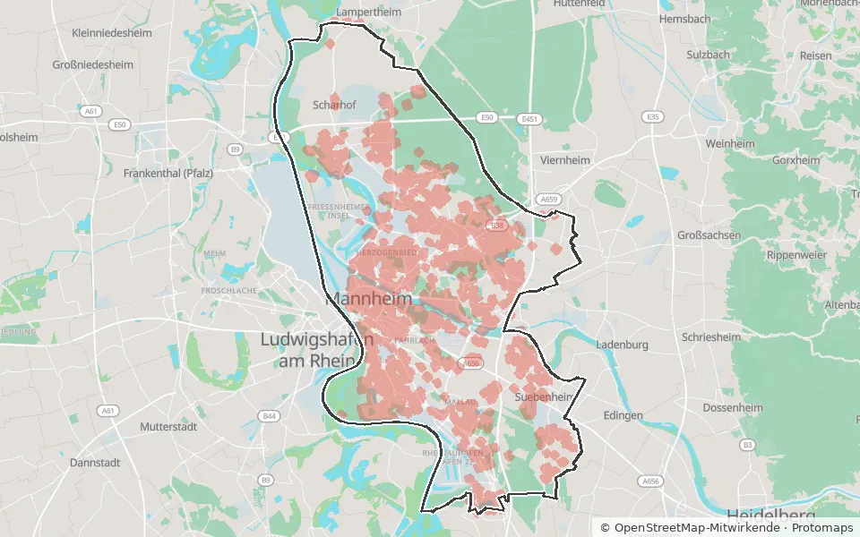
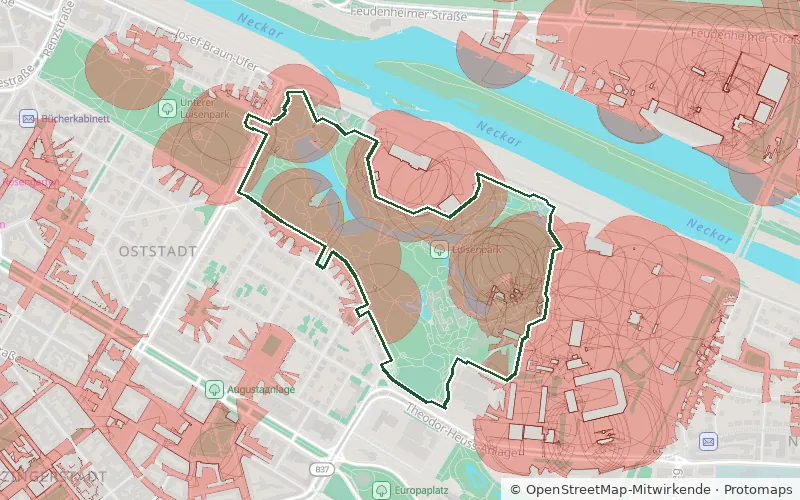
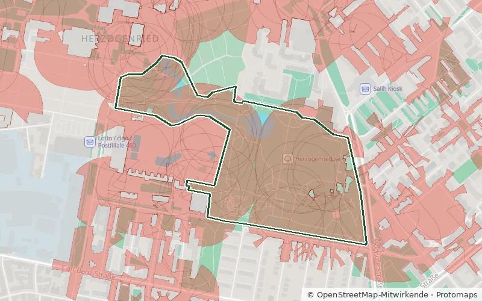
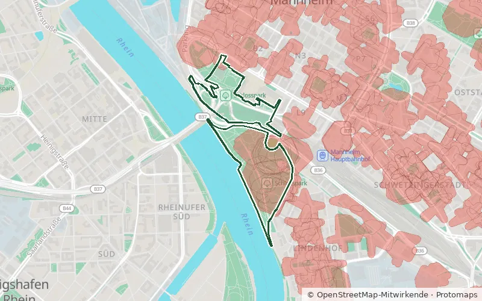
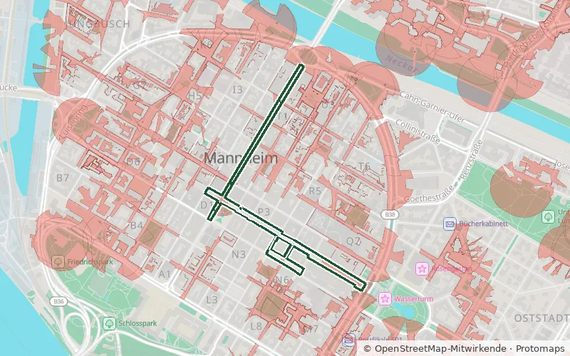
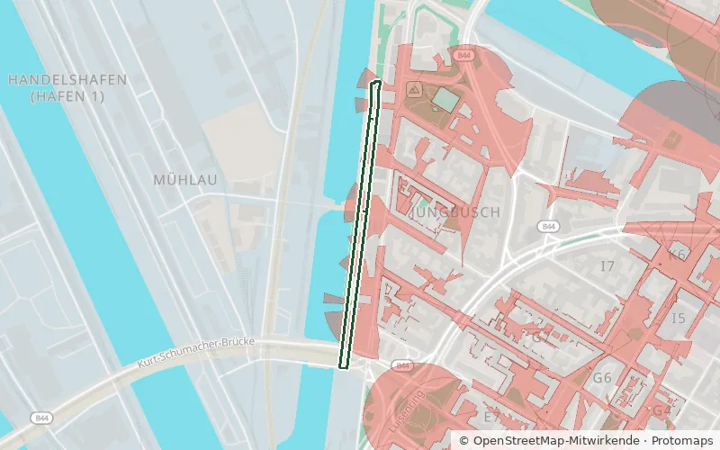
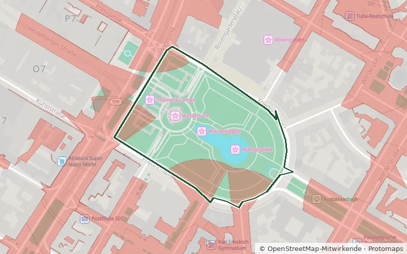

In Mannheim ist öffentliches Kiffen auf 24 km² verboten, das sind 16,9 % der Stadtfläche von 145 km². Grund sind 1 641 Einrichtungen wie Schulen und Spielplätze: In ihrer Sichtweite, bis 100 Meter vom Eingang und ohne Gebäude dazwischen, verbietet § 5 KCanG den Konsum. Dazu kommen die Fußgängerzonen von 7 bis 20 Uhr und überall die Gegenwart von Minderjährigen.
Die Stadt Mannheim hat eine eigene Karte veröffentlicht, mit Zonen von 100 Metern und, auf einer zweiten Ebene, die man erst einschalten muss, den Fußgängerzonen nach ihren Angaben (Cannabiskonsumkarte der Stadt).

Woher die Zonen in Mannheim kommen
| Einrichtung | Anzahl | Zonenfläche |
|---|---|---|
| Schulen | 137 | 4,5 km² |
| Kitas und Kindergärten | 165 | 3,3 km² |
| Kindertagespflege | 14 | 0,2 km² |
| Spielplätze | 457 | 8,7 km² |
| Kinder- und Jugendeinrichtungen | 43 | 0,8 km² |
| Sportstätten | 825 | 13,8 km² |
Jede Art für sich gezählt, Überlappungen also mehrfach. Anbauvereinigungen nur, soweit in OpenStreetMap eingetragen.
Die meisten Zonen gehen auf die 825 Sportstätten zurück, danach auf die 457 Spielplätze.
Von den Anbauvereinigungen hatte das Land bis Juni 2025 eine mit Sitz in Mannheim erlaubt; wo sie anbaut, ist nicht veröffentlicht (Landtag Baden-Württemberg).
Luisenpark und Parks
Im Luisenpark liegen 70 % der Fläche in einer Zone: 18 Spielplätze liegen im Park. Im Herzogenriedpark sind es 96 %, um sieben Spielplätze und sechs Sportanlagen. In beiden Parks verbietet die Nutzungsordnung Cannabis auf dem ganzen Gelände; wer sich nicht daran hält, muss gehen (Nutzungsordnung Luisenpark, Herzogenriedpark).


Im Spinelli-Park, dem Gelände der Bundesgartenschau 2023, liegen 45 % in einer Zone; dort verbietet die Satzung der Stadt auf und an den Spielflächen den Konsum berauschender Mittel, bis zu 1.000 Euro (Satzung Spinelli-Park). Der Schlosspark am Rhein kommt auf 42 %, mit neun Sportanlagen und drei Spielplätzen. Auf einem 100 Meter breiten Streifen Land entlang von Rhein und Neckar liegen 15 % in einer Zone.

Quadrate und Jungbusch
Fußgängerzonen sind nach der Karte der Stadt die Planken über den Paradeplatz bis zum Friedrichsring und die Breite Straße von der Kurpfalzbrücke bis zum Paradeplatz, außerdem etwa der Alte Meßplatz und der Bahnhofsvorplatz; der Marktplatz und der Friedrichsplatz am Wasserturm sind dort nicht als Fußgängerzone eingefärbt. In der Fußgängerzone gilt von 7 bis 20 Uhr Konsumverbot; blau sind die Fußgängerbereiche aus OpenStreetMap.
Von Planken und Breiter Straße liegen außerdem 44 % in einer Sichtweiten-Zone, um Schulen, Kitas und Sportstätten in den Quadraten. Vom Paradeplatz sind es 51 %, vom Friedrichsplatz 23 %; der Marktplatz liegt fast außerhalb (2 %), ebenso der Alte Meßplatz (12 %). An der Jungbuschpromenade am Verbindungskanal liegen 46 % in einer Zone.



In den Wartehäuschen an Haltestellen verbietet die Polizeiverordnung der Stadt, sich zum Konsum berauschender Mittel aufzuhalten, und auf Kinderspielplätzen das Rauchen, bis zu 5.000 Euro (Polizeiverordnung, § 10).
Universität
Hochschulen sind nach § 5 KCanG keine Verbotsorte. Der Ehrenhof des Schlosses, in dem die Universität sitzt, liegt außerhalb jeder Zone (0 %). Die Hausordnung der Universität verbietet auf ihrem ganzen Gelände den Konsum von „Drogen und Betäubungsmitteln“; ob Cannabis gemeint ist, sagt sie nicht (Hausordnung).
Was sonst noch in Mannheim gilt
Seit Juni 2026 ist gerauchtes Cannabis in Baden-Württemberg auch auf Spielplätzen, Schulgeländen und Kita-Grundstücken, an allen Haltestellen und in Freibädern und Zoos verboten, bis zu 200 Euro (Land Baden-Württemberg).
Einen Bußgeldkatalog für das Cannabisgesetz hat das Land nicht; das Gesetz erlaubt bis zu 30.000 Euro. Die Polizei in Mannheim nannte im Juni 2026 Bußgelder von 300 bis 1.000 Euro als üblich, nachdem sie an einem Abend in der Innenstadt neun Verstöße gegen das Cannabisgesetz festgestellt hatte (Polizeipräsidium Mannheim). Eigene Verbotszonen für Cannabis hat Mannheim nicht (Stand 27. November 2026).
Häufige Fragen zu Mannheim
Wo darf man in Mannheim kiffen?
Nach § 5 KCanG außerhalb der roten Flächen, etwa im Waldpark am Rhein (13 % in einer Zone). Nicht im Luisenpark und im Herzogenriedpark, deren Nutzungsordnung Cannabis verbietet, tagsüber nicht in den Fußgängerzonen, nie in Gegenwart von Minderjährigen, gerauchtes Cannabis außerdem nicht an Haltestellen, auf Spielplätzen, Schulgeländen und in Freibädern. Weiß heißt nicht sicher erlaubt: Hecken, Bäume und fehlende Einrichtungen kennt die Karte nicht.
Gibt es eine amtliche Karte?
Ja, die Stadt Mannheim hat eine veröffentlicht (Link oben). Diese Karte hier kann von ihr abweichen, etwa bei den Fußgängerzonen oder bei Einrichtungen, die in OpenStreetMap anders oder gar nicht eingetragen sind; im Zweifel gilt, was vor Ort ausgeschildert ist.
Wie genau ist das?
Täglich aus OpenStreetMap gerechnet, mit Gebäuden als Sichthindernis; die Zahlen hier sind vom 27. November 2026. Eine Orientierungshilfe, keine Rechtsauskunft (wie gerechnet wird).
Fehlt eine Einrichtung? Korrekturen in OpenStreetMap stehen am Tag darauf auf der Karte; bitte nur eintragen, was es vor Ort gibt.